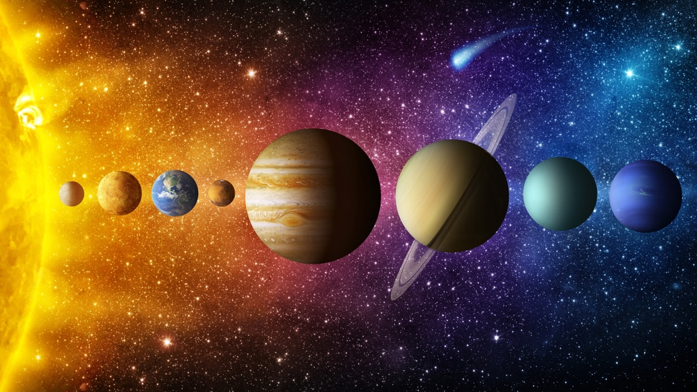

Fußball gehört auf der ganzen Welt zu den populärsten und beliebtesten
Sportarten überhaupt. Die Menschen spielen Fußball als Hobby in ihrer
Freizeit sowohl organisiert in Vereinen als auch hobbymäßig auf öffentlichen
Fußballplätzen, einfachen Plätzen und freien Grünflächen oder sonstigen „
Bolzplätzen“, die sich zum Kicken eignen. Da zum Fußballspielen nicht viel
Equipment benötigt wird, kann mit ein paar Spielern und einem Ball so gut
wie jede Fläche zum eigenen Fußballplatz gemacht werden.
Astronomie

Solarsystem
In den VdS-Fachgruppen finden sich sowohl Anfänger als auch erfahrene Hobby-Astronomen zusammen. Sie sind der Motor der VdS, betreuen und unterstützen Mitglieder in ihren astronomischen Aktivitäten und fördern damit die Zusammenarbeit. Jährlich stattfindende Fachgruppentagungen sind ideale Gelegenheiten, um andere Sternfreunde kennen zu lernen und Erfahrungen auszutauschen. Etliche Fachgruppen geben eigene Mitteilungsschriften heraus mit wichtigen Tipps für die Astropraxis.
Haben Sie spezielle Fragen oder Probleme bei Ihrer astronomischen Tätigkeit, so werden Sie durch die Fachgruppen von erfahrenen Hobby-Astronomen der VdS beraten. Hier finden Sie auch Unterstützung, um Ihre Ergebnisse zu veröffentlichen.
Astronomie kann natürlich auch außerhalb der Fachgruppen betrieben werden, wie zum Beispiel ganz individuell im Urlaub. Die jeweiligen Reiseziele und Himmelsereignisse geben dabei den Rahmen vor. So sind die Sternenparks und Teleskoptreffen für jeden schon bundesweit erreichbar. Auch historische Sternwarten gehören dazu, die man natürlich auch weltweit aufsuchen kann. Klassische Ziele für Amateurastronomen sind dann per Flieger die Kanarischen Inseln, Namibia oder Chile. Doch auch mit dem PKW oder Wohnmobil lassen sich viele Länder in Europa bequem für Astronomen erreichen. Natürlich auch Reiseziele in Deutschland. Ganze Tourismuszweige haben sich zu Ereignissen wie Sonnenfinsternisse oder Polarlichter gebildet. Ob die Fahrt durch einen Reiseveranstalter oder persönlich organisiert wird, ist jedem Sternfreund selber überlassen. In Zeiten eingeschränkter Reisemöglichkeiten bieten sich zudem Remote Sternwarten an.
Quelle : sternfreunde.de
Sprachen
Sprachen der Welt
Sprachen sind das Tor zur Welt, heißt es und tatsächlich hat es viele praktische Vorzüge, Fremdsprachen zu lernen. Viele Menschen sprechen neben ihrer Landessprache noch gut Englisch, eine Sprache, die in vielen Ländern gesprochen oder zumindest verstanden wird. Geschätzt 6000 Sprachen gibt es weltweit und wer Sprachen zu seinem Hobby machen will, hat die Qual der Wahl.
Einige Sprachen sehen kunstvoll und wunderschön aus, wenn sie geschrieben werden. Andere klingen wie Magie und wieder andere erweisen sich im beruflichen Alltag als sehr nützlich. Bevor also die entsprechende App heruntergeladen oder die Anmeldung zum Sprachkurs unterschrieben wird, ist es wichtig, zu wissen, welche Sprache überhaupt infrage kommt.
Quelle : hobbysfinden.de
Kino
Die siebte Kunst
Im Kino projiziert man mit Projektoren bzw. Filmprojektoren Lichtbilder oder Filme auf eine Bildwand. Eine solche Filmprojektion (Projektion von Folgen sich verändernder Bilder) wird auch als Laufbildprojektion bezeichnet.[1] Bis zur Einführung des Tonfilms 1929 gab es keine Norm für Aufnahme- und Wiedergabegeschwindigkeiten von Filmen. Je nach vorhandenen Lichtverhältnissen und der Art der Aufnahme (Handkurbel oder automatisch) sowie nach Belieben des Kameramanns oder Regisseurs (um z. B. hektische Szenen zu betonen) variierte die Aufnahmegeschwindigkeit und dementsprechend variiert auch bei der gleichmäßig schnellen Wiedergabe die Schnelligkeit der Bewegungen. Die Filmvorführer in den Kinos spielten in der Regel mit einer Geschwindigkeit zwischen 15 und 18 Bildern pro Sekunde ab. Bis Ende der 1920er Jahre stieg diese Geschwindigkeit durchschnittlich auf über 24 Bilder pro Sekunde an, was dann mit Einführung des Tonfilms, wo die Geschwindigkeit aufgrund der Tonspur gleich bleiben muss, als Norm festgelegt wurde.
Quelle : Wikipedia